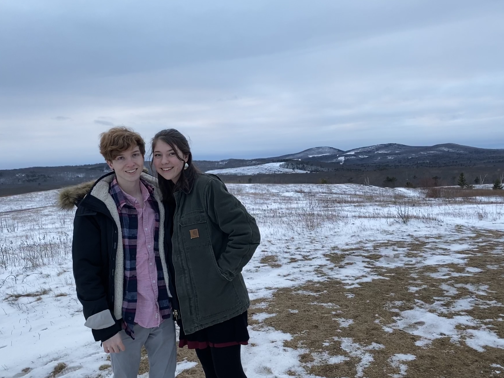

jon sides

(me and my friend robyn)
bio
bowdoin college (sophomore), barista (Starbucks)
born in St. Paul Minnesota, currently living in connecticut
i make really good coffee, watch a lot of star wars, and am
"famous" for often calling election winners correctly before all
of the major networks.
contact information (email)
jsides@bowdoin.edu
major/minor
- psychology
- math?
- economics (minor)
relevant courses taken
- psychology
- AP psychology
- neurobiology
- cognitive neuroscience
- data analysis
- (most of) abnormal psychology
- lab in cognitive psychology (current)
- math
- BC calculus
- multivariate calculus
- economics minor
- AP macroeconomics
- AP microeconomics
- environmental economics
- economics of the European Union
- intermediate macroeconomics
other interests
- coffee enthusiast
- star wars
- hockey, ice skating
- dungeons & dragons
- musical theatre--viewing, not performing :(
- music
- election science
- research on alternative voting systems (IRV, concordet, Approval Voting, etc.)
- election forecasting, polling